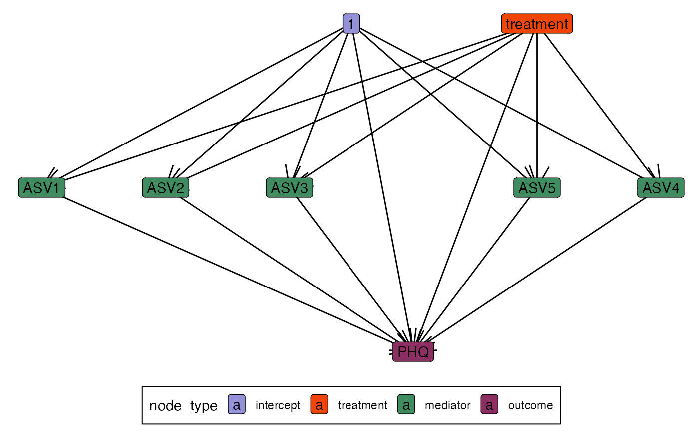

This vignette gives a brief introduction using simulated that resemble a mediation analysis of the gut-brain axis. The basic question is – we know that meditation can reduce depression and anxiety symptoms, so is it possible that microbiome shifts might play a role? In the language of mediation analysis, does the microbiome mediate Public Health Questionnaire-9 (PHQ) score?
demo_joy()#> class: SummarizedExperiment
#> dim: 5 100
#> metadata(0):
#> assays(1): counts
#> rownames(5): ASV1 ASV2 ASV3 ASV4 ASV5
#> rowData names(0):
#> colnames: NULL
#> colData names(2): treatment PHQFor mediation analysis, we distinguish between the different variable types. This data structures defines treatment, mediator, and outcome group using tidyselect-style notation.
exper <- mediation_data(demo_joy(), "PHQ", "treatment", starts_with("ASV"))
exper#> [Mediation Data]
#> 100 samples with measurements for,
#> 1 treatment: treatment
#> 5 mediators: ASV1, ASV2, ...
#> 1 outcome: PHQThis is the main estimation function. By default, we fit a separate linear regression model for each mediation and outcome variable.
model <- multimedia(exper) |>
estimate(exper)
model#> [Multimedia Analysis]
#> Treatments: treatment
#> Outcomes: PHQ
#> Mediators: ASV1, ASV2, ...
#>
#> [Models]
#> mediation: A fitted lm_model().
#> outcome: A fitted lm_model().The edges slot tracks all the variable relationships,
and it can be accessed using the edges method. For example,
we can visualize the causal graph using the ggraph code
below.
ggraph(edges(model)) +
geom_edge_link(arrow = arrow()) +
geom_node_label(aes(label = name, fill = node_type))
Now that we’ve coupled the mediation and outcome models, we can
propogate predictions and samples through them. That is, we can define
certain configurations of the treatment (and pretreatments, if we have
them) and then use the fitted models to simulate new mediation and
outcome samples. By default, it will sample at the template data that
was used to fit the model, just like the predict method for
lm.
sample(model)#> [Mediation Data]
#> 2 samples with measurements for,
#> 1 treatment: treatment
#> 5 mediators: ASV1, ASV2, ...
#> 1 outcome: PHQ
predict(model)#> $mediators
#> # A tibble: 2 × 5
#> ASV1 ASV2 ASV3 ASV4 ASV5
#>
#> 1 0.0733 -0.356 0.0738 -0.244 -0.180
#> 2 0.0336 0.207 0.216 -0.0296 -0.241
#>
#> $outcomes
#> # A tibble: 2 × 1
#> PHQ
#>
#> 1 -0.129
#> 2 -0.0472Things get more interesting when we sample at new treatment and pretreatment configurations. We need to be careful with our accounting, because we want the flexibility to provide different combinations of treatments to different sets of edges. For example, we may want to imagine that the edge for one particular mediator was set to treatment while all others were left at control. The example below has one sample with this kind of configuration and three others that keep all edges at control.
t_mediator <- factor(c("Treatment", rep("Control", 3)))
t_outcome <- factor(rep("Control", 4), levels = c("Treatment", "Control"))
profile <- setup_profile(model, t_mediator, t_outcome)
sample(model, profile = profile)#> [Mediation Data]
#> 4 samples with measurements for,
#> 1 treatment: treatment
#> 5 mediators: ASV1, ASV2, ...
#> 1 outcome: PHQ
predict(model, profile = profile)#> $mediators
#> # A tibble: 4 × 5
#> ASV1 ASV2 ASV3 ASV4 ASV5
#>
#> 1 0.0336 0.207 0.216 -0.0296 -0.241
#> 2 0.0733 -0.356 0.0738 -0.244 -0.180
#> 3 0.0733 -0.356 0.0738 -0.244 -0.180
#> 4 0.0733 -0.356 0.0738 -0.244 -0.180
#>
#> $outcomes
#> # A tibble: 4 × 1
#> PHQ
#>
#> 1 -0.134
#> 2 -0.129
#> 3 -0.129
#> 4 -0.129
setup_profile(model, t_mediator, t_outcome)#> An object of class "treatment_profile"
#> Slot "t_mediator":
#> $ASV1
#> treatment
#> 1 Treatment
#> 2 Control
#> 3 Control
#> 4 Control
#>
#> $ASV2
#> treatment
#> 1 Treatment
#> 2 Control
#> 3 Control
#> 4 Control
#>
#> $ASV3
#> treatment
#> 1 Treatment
#> 2 Control
#> 3 Control
#> 4 Control
#>
#> $ASV4
#> treatment
#> 1 Treatment
#> 2 Control
#> 3 Control
#> 4 Control
#>
#> $ASV5
#> treatment
#> 1 Treatment
#> 2 Control
#> 3 Control
#> 4 Control
#>
#>
#> Slot "t_outcome":
#> $PHQ
#> treatment
#> 1 Control
#> 2 Control
#> 3 Control
#> 4 ControlWe can also contrast the predictions and samples under different profiles.
profile_control <- setup_profile(model, t_outcome, t_outcome)
contrast_predictions(model, profile, profile_control)#> $mediators
#> ASV1 ASV2 ASV3 ASV4 ASV5
#> 1 -0.03966196 0.5628434 0.1422071 0.2142301 -0.06050224
#> 2 0.00000000 0.0000000 0.0000000 0.0000000 0.00000000
#> 3 0.00000000 0.0000000 0.0000000 0.0000000 0.00000000
#> 4 0.00000000 0.0000000 0.0000000 0.0000000 0.00000000
#>
#> $outcomes
#> PHQ
#> 1 -0.004711189
#> 2 0.000000000
#> 3 0.000000000
#> 4 0.000000000
contrast_samples(model, profile, profile_control)#> $mediators
#> ASV1 ASV2 ASV3 ASV4 ASV5
#> 1 -0.5824589 -1.31174550 -1.1535975 -2.0415285 0.2491817
#> 2 -1.3890991 -0.09735162 -0.6391102 2.8177793 -2.1016418
#> 3 0.2027900 0.29022594 -1.2864539 -1.8812498 -0.4874635
#> 4 -2.9809633 0.28255206 -0.7501835 0.2447107 -2.1785355
#>
#> $outcomes
#> PHQ
#> 1 0.9445916
#> 2 2.8118436
#> 3 -0.8467963
#> 4 0.7034690Effect Estimates
It’s a small step from contrasting different configurations to asking for the direct and indirect treatments effects. The direct effect is defined as the average of across mediator treatment effects . The hats mean that we use the predicted values from the mediation and outcome values. I’ve distinguished between “overall” and “pathwise” indirect effects because we’re working with high-dimensional mediators. In the overall effect, we toggle treatment/control status for incoming edges to all mediators. In pathwise indirect effects, we toggle only the treatment going into one mediator.
direct_effect(model, exper)#> outcome indirect_setting contrast direct_effect
#> 1 PHQ Control Control - Treatment -0.08646108
#> 2 PHQ Treatment Control - Treatment -0.08646108
indirect_overall(model, exper)#> outcome direct_setting contrast indirect_effect
#> 1 PHQ Control Control - Treatment 0.004711189
#> 2 PHQ Treatment Control - Treatment 0.004711189
indirect_pathwise(model, exper)#> outcome mediator direct_setting contrast indirect_effect
#> 1 PHQ ASV1 Control Control - Treatment 0.002020718
#> 2 PHQ ASV2 Control Control - Treatment -0.022797615
#> 3 PHQ ASV3 Control Control - Treatment 0.036157236
#> 4 PHQ ASV4 Control Control - Treatment 0.005179493
#> 5 PHQ ASV5 Control Control - Treatment -0.015848643
#> 6 PHQ ASV1 Treatment Control - Treatment 0.002020718
#> 7 PHQ ASV2 Treatment Control - Treatment -0.022797615
#> 8 PHQ ASV3 Treatment Control - Treatment 0.036157236
#> 9 PHQ ASV4 Treatment Control - Treatment 0.005179493
#> 10 PHQ ASV5 Treatment Control - Treatment -0.015848643So far, we’ve done everything using just linear models. We could actually have computed all these effects just by looking at parameter estimates. What’s nice is that we can plug in many differnet kinds of mediation or outcome models. The package already includes interfaces to the logistic-normal multinomial, sparse regression with glmnet, random forests with ranger, and bayesian models with brms. It’s also not too difficult to extend to new model types (we should add a vignette). Here’s an example of everything we did above but for glmnet. The fact that all the estimates are 0 is a good thing – there are no real effects in the simulated data.
model <- multimedia(exper, glmnet_model(lambda = .1)) |>
estimate(exper)
direct_effect(model, exper)#> outcome indirect_setting contrast direct_effect
#> 1 PHQ Control Control - Treatment -0.05366268
#> 2 PHQ Treatment Control - Treatment -0.05366268
indirect_overall(model, exper)#> outcome direct_setting contrast indirect_effect
#> 1 PHQ Control Control - Treatment 0.01384187
#> 2 PHQ Treatment Control - Treatment 0.01384187
indirect_pathwise(model, exper)#> outcome mediator direct_setting contrast indirect_effect
#> 1 PHQ ASV1 Control Control - Treatment 0.000000000
#> 2 PHQ ASV2 Control Control - Treatment 0.000000000
#> 3 PHQ ASV3 Control Control - Treatment 0.022930790
#> 4 PHQ ASV4 Control Control - Treatment 0.000000000
#> 5 PHQ ASV5 Control Control - Treatment -0.009088919
#> 6 PHQ ASV1 Treatment Control - Treatment 0.000000000
#> 7 PHQ ASV2 Treatment Control - Treatment 0.000000000
#> 8 PHQ ASV3 Treatment Control - Treatment 0.022930790
#> 9 PHQ ASV4 Treatment Control - Treatment 0.000000000
#> 10 PHQ ASV5 Treatment Control - Treatment -0.009088919Inference
Effect estimates are rarely enough on their own. We need some
uncertainty assessments to set appropriate expectations. The most
straightforward approach is to use the bootstrap. Each function in the
third argument, fs, will get its own data.frame with the
bootstrap distribution for that estimator.
#> bootstrap outcome indirect_setting contrast direct_effect
#> 1 1 PHQ Control Control - Treatment -0.07762666
#> 2 1 PHQ Treatment Control - Treatment -0.07762666
#> 3 2 PHQ Control Control - Treatment -0.13247632
#> 4 2 PHQ Treatment Control - Treatment -0.13247632
#> 5 3 PHQ Control Control - Treatment -0.08455178
#> 6 3 PHQ Treatment Control - Treatment -0.08455178
#> 7 4 PHQ Control Control - Treatment -0.10422923
#> 8 4 PHQ Treatment Control - Treatment -0.10422923
#> 9 5 PHQ Control Control - Treatment -0.15210409
#> 10 5 PHQ Treatment Control - Treatment -0.15210409We can also generate synthetic nulls to calibrate selection sets. The third argument says which set of edges we want to remove under the null. In this case we will generate synthetic null data where there is known to be no relationship between the mediators and outcome. The fourth argument says which effect estimates we should evaluate. We then fit the full model on both the original and the synthetic null data. We can define false discovery rate thresholds by ranking estimates across the two data sets. If we see many null effects mixed in among the strong effects in real data, we know to trust only the very strongest real effects (if any).
contrast <- null_contrast(model, exper, "M->Y", indirect_pathwise)
fdr <- fdr_summary(contrast, "indirect_pathwise", 0.05)
fdr#> # A tibble: 10 × 8
#> source outcome mediator indirect_effect .group rank fdr_hat keep
#>
#> 1 real PHQ ASV3 0.0229 drop_last 1 0 FALSE
#> 2 synthetic PHQ ASV4 0.0226 drop_last 2 0.5 FALSE
#> 3 synthetic PHQ ASV3 0.0128 drop_last 3 0.667 FALSE
#> 4 real PHQ ASV5 -0.00909 drop_last 4 0.5 FALSE
#> 5 real PHQ ASV1 0 drop_last 5 0.4 FALSE
#> 6 real PHQ ASV2 0 drop_last 6 0.333 FALSE
#> 7 real PHQ ASV4 0 drop_last 7 0.286 FALSE
#> 8 synthetic PHQ ASV1 0 drop_last 8 0.375 FALSE
#> 9 synthetic PHQ ASV2 0 drop_last 9 0.444 FALSE
#> 10 synthetic PHQ ASV5 0 drop_last 10 0.5 FALSE#> R version 4.4.1 Patched (2024-08-21 r87049)
#> Platform: aarch64-apple-darwin20
#> Running under: macOS Sonoma 14.5
#>
#> Matrix products: default
#> BLAS: /Library/Frameworks/R.framework/Versions/4.4-arm64/Resources/lib/libRblas.0.dylib
#> LAPACK: /Library/Frameworks/R.framework/Versions/4.4-arm64/Resources/lib/libRlapack.dylib; LAPACK version 3.12.0
#>
#> locale:
#> [1] en_US.UTF-8/en_US.UTF-8/en_US.UTF-8/C/en_US.UTF-8/en_US.UTF-8
#>
#> time zone: America/Chicago
#> tzcode source: internal
#>
#> attached base packages:
#> [1] stats graphics grDevices utils datasets methods base
#>
#> other attached packages:
#> [1] ggraph_2.2.1 multimedia_0.2.0 tidyselect_1.2.1 ranger_0.16.0
#> [5] glmnetUtils_1.1.9 brms_2.21.0 Rcpp_1.0.13 ggplot2_3.5.1
#>
#> loaded via a namespace (and not attached):
#> [1] tensorA_0.36.2.1 jsonlite_1.8.8
#> [3] shape_1.4.6.1 magrittr_2.0.3
#> [5] TH.data_1.1-2 estimability_1.5.1
#> [7] farver_2.1.2 rmarkdown_2.28
#> [9] fs_1.6.4 zlibbioc_1.51.1
#> [11] ragg_1.3.2 vctrs_0.6.5
#> [13] multtest_2.61.0 memoise_2.0.1
#> [15] htmltools_0.5.8.1 S4Arrays_1.5.7
#> [17] progress_1.2.3 distributional_0.4.0
#> [19] curl_5.2.2 Rhdf5lib_1.27.0
#> [21] SparseArray_1.5.31 rhdf5_2.49.0
#> [23] sass_0.4.9 StanHeaders_2.32.10
#> [25] bslib_0.8.0 htmlwidgets_1.6.4
#> [27] desc_1.4.3 plyr_1.8.9
#> [29] sandwich_3.1-0 emmeans_1.10.4
#> [31] zoo_1.8-12 cachem_1.1.0
#> [33] igraph_2.0.3 lifecycle_1.0.4
#> [35] iterators_1.0.14 pkgconfig_2.0.3
#> [37] Matrix_1.7-0 R6_2.5.1
#> [39] fastmap_1.2.0 GenomeInfoDbData_1.2.12
#> [41] MatrixGenerics_1.17.0 digest_0.6.37
#> [43] colorspace_2.1-1 patchwork_1.2.0
#> [45] S4Vectors_0.43.2 textshaping_0.4.0
#> [47] miniLNM_0.1.0 GenomicRanges_1.57.1
#> [49] vegan_2.6-8 labeling_0.4.3
#> [51] fansi_1.0.6 polyclip_1.10-7
#> [53] httr_1.4.7 abind_1.4-5
#> [55] mgcv_1.9-1 compiler_4.4.1
#> [57] withr_3.0.1 backports_1.5.0
#> [59] inline_0.3.19 viridis_0.6.5
#> [61] highr_0.11 QuickJSR_1.3.1
#> [63] pkgbuild_1.4.4 ggforce_0.4.2
#> [65] MASS_7.3-61 DelayedArray_0.31.11
#> [67] biomformat_1.33.0 loo_2.8.0
#> [69] permute_0.9-7 tools_4.4.1
#> [71] ape_5.8 glue_1.7.0
#> [73] nlme_3.1-166 rhdf5filters_1.17.0
#> [75] grid_4.4.1 checkmate_2.3.2
#> [77] cluster_2.1.6 reshape2_1.4.4
#> [79] ade4_1.7-22 generics_0.1.3
#> [81] operator.tools_1.6.3 gtable_0.3.5
#> [83] formula.tools_1.7.1 tidyr_1.3.1
#> [85] data.table_1.16.0 hms_1.1.3
#> [87] tidygraph_1.3.1 utf8_1.2.4
#> [89] XVector_0.45.0 BiocGenerics_0.51.1
#> [91] ggrepel_0.9.5 foreach_1.5.2
#> [93] pillar_1.9.0 stringr_1.5.1
#> [95] posterior_1.6.0 splines_4.4.1
#> [97] tweenr_2.0.3 dplyr_1.1.4
#> [99] lattice_0.22-6 survival_3.7-0
#> [101] Biostrings_2.73.1 knitr_1.48
#> [103] gridExtra_2.3 V8_5.0.0
#> [105] phyloseq_1.49.0 IRanges_2.39.2
#> [107] SummarizedExperiment_1.35.1 stats4_4.4.1
#> [109] xfun_0.47 graphlayouts_1.1.1
#> [111] bridgesampling_1.1-2 Biobase_2.65.1
#> [113] matrixStats_1.4.0 rstan_2.32.6
#> [115] stringi_1.8.4 UCSC.utils_1.1.0
#> [117] yaml_2.3.10 evaluate_0.24.0
#> [119] codetools_0.2-20 tibble_3.2.1
#> [121] cli_3.6.3 RcppParallel_5.1.9
#> [123] xtable_1.8-4 systemfonts_1.1.0
#> [125] munsell_0.5.1 jquerylib_0.1.4
#> [127] GenomeInfoDb_1.41.1 coda_0.19-4.1
#> [129] parallel_4.4.1 rstantools_2.4.0
#> [131] pkgdown_2.1.0 prettyunits_1.2.0
#> [133] bayesplot_1.11.1 Brobdingnag_1.2-9
#> [135] glmnet_4.1-8 viridisLite_0.4.2
#> [137] mvtnorm_1.3-1 scales_1.3.0
#> [139] purrr_1.0.2 crayon_1.5.3
#> [141] rlang_1.1.4 multcomp_1.4-26